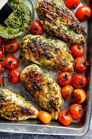

Ingredients:
- 4 boneless skinless chicken breast halves
- 1/2 cup refrigerated basil pesto
- 2-3 plum tomatoes, sliced (optional)
- 1/2 cup mozzarella cheese, shredded
Directions:
- Preheat oven to 400 degrees F.
- Line baking sheet with heavy-duty foil.
- Place chicken and pesto in medium bowl; toss to coat.
- Place chicken on prepared baking sheet.
- Bake for 20-25 minutes or until chicken is no longer pink in center.
- Remove from oven; top with tomatoes and cheese.
- Bake for an additional 3-5 minutes or until cheese is melted.
Preparation Time: 20-30 Mins
Difficulty: Easy